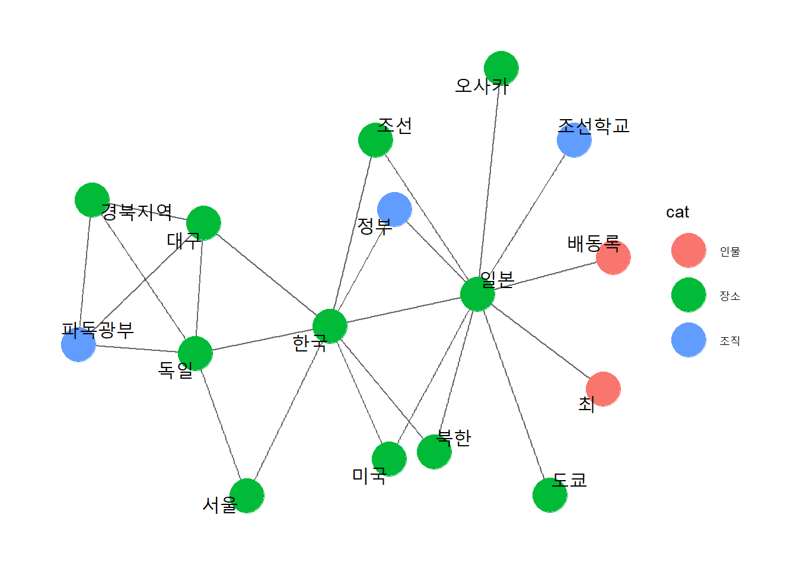

library(tidyverse)
library(purrr)
library(tidytext)
library(tidygraph)
library(igraph)
library(networkD3)
library(widyr)
library(ggraph)
library(glue)
#library(showtext)
#font_add_google(name = "Nanum Gothic", family = "nanumgothic")
#showtext_auto()2. Tidy한 네트워크 분석
NER 테그를 이용해 인물, 장소, 조직을 추출
테그 레퍼런스: https://aiopen.etri.re.kr/guide/WiseNLU
dt_ner <- readRDS("dt_ner.rds")dt_ner |>
filter(!str_detect(type, "DT_|QT_|AM_|TI_|MT_|PT_")) |>
#!(type %in% c("")))
count(text, sort=T)# A tibble: 2,938 × 2
text n
<chr> <int>
1 일본 500
2 한국 329
3 독일 245
4 어머니 236
5 목사 199
6 아버지 183
7 한인 127
8 조선인 125
9 간호사 117
10 조선학교 115
# ℹ 2,928 more rowsdt_cat <- dt_ner |>
filter(str_detect(type, "(^PS_NAME)|^(LC)|^(OG)")) |>
mutate(cat = case_when(str_detect(type, "^PS_NAME") ~ "인물",
str_detect(type, "^LC") ~ "장소",
str_detect(type, "^OG") ~ "조직"))nodeAttr <- dt_cat |>
group_by(text, cat) |>
summarise(text=first(text), cat=first(cat)) |>
ungroup()`summarise()` has grouped output by 'text'. You can override using the
`.groups` argument.#saveRDS(nodeAttr, "nodeAttr.rds")dupList <- nodeAttr |>
group_by(text) |>
summarise(n = n()) |>
filter(n >= 2) |>
pull(text)#saveRDS(dupList, "dupList.rds")nodeAttr |>
filter(text %in% dupList)# A tibble: 75 × 2
text cat
<chr> <chr>
1 駆け込み寺 장소
2 駆け込み寺 조직
3 고설화 인물
4 고설화 장소
5 고유사 인물
6 고유사 장소
7 고쿠라탄광 인물
8 고쿠라탄광 장소
9 고쿠라탄광 조직
10 남 장소
# ℹ 65 more rows그래프 데이터로 변환환
g <- dt_cat |>
filter(!(text %in% dupList)) |>
unite("bp", c("book", "para")) |>
pairwise_count(text, bp, sort=TRUE, diag=FALSE) |>
rename(weight=n) |>
#filter(weight > 5) |>
graph_from_data_frame(directed=FALSE)is_weighted(g)gTidy <- g |>
as_tbl_graph()#saveRDS(gTidy, "gTidy.rds")그래프 시각화
#nodeList <- gTidy |>
# activate(nodes) |>
# pull()gTidy |>
activate(edges) |>
filter(weight > 10) |>
activate(nodes) |>
left_join(nodeAttr |>
filter(!(text %in% dupList)), by=c("name"="text")) |>
mutate(degree = centrality_degree()) |>
filter(degree != 0) |>
ggraph() +
aes(edgh_width=weight, alpah=weight) +
geom_edge_link(alpha = 0.50, edge_color = "grey20") +
geom_node_point(aes(color=cat), size=10) +
# geom_node_text(aes(label=name)) |>
geom_node_text(aes(label = name), # 텍스트 표시
repel = T, # 노드밖 표시
size = 5, # 텍스트 크기
family = "nanumgothic") + # 폰트
theme_graph() # 배경 삭제 # 배경 삭제Using "stress" as default layout
pair <- dt_ner |>
filter(!str_detect(type, "DT_|QT_|AM_|TI_|MT_|PT_")) |>
pairwise_count(item = text,
feature = para, # 다른 책의 같은 para일 수 있음 -> book도 같이 구분하도록 고쳐야 함!
sort = T)pair |>
filter(item1 == "조선족")# A tibble: 69 × 3
item1 item2 n
<chr> <chr> <dbl>
1 조선족 중국 5
2 조선족 독일 5
3 조선족 일본 3
4 조선족 한국 3
5 조선족 미국 3
6 조선족 중국인 3
7 조선족 재외한인 2
8 조선족 재일한인 2
9 조선족 조선인 2
10 조선족 자녀 2
# ℹ 59 more rowsgraph_kd <- pair %>%
filter(n >= 20) %>%
as_tbl_graph(directed = F) %>%
mutate(centrality = centrality_degree(), # 연결 중심성
group = as.factor(group_infomap())) # 커뮤니티graph_kd |>
ggraph(layout = "fr") + # 레이아웃
geom_edge_link(color = "gray50", # 엣지 색깔
alpha = 0.5) + # 엣지 명암
geom_node_point(aes(size = centrality, # 노드 크기
color = group), # 노드 색깔
show.legend = F) + # 범례 삭제
scale_size(range = c(5, 15)) + # 노드 크기 범위
geom_node_text(aes(label = name), # 텍스트 표시
repel = T, # 노드밖 표시
size = 5, # 텍스트 크기
family = "nanumgothic") + # 폰트
theme_graph() # 배경 삭제
https://youngwoos.github.io/Doit_textmining/05/05-co-occurrenceAnalysis.html#90
networkD3를 이용한 인터랙리브 시각화
gig <- gTidy |>
activate(edges) |>
filter(weight > 4) |>
activate(nodes) |>
left_join(nodeAttr |>
filter(!(text %in% dupList)), by=c("name"="text")) |>
mutate(degree = centrality_degree()) |>
filter(degree != 0) |>
as.igraph()
gD3 <- gig |>
igraph_to_networkD3(group=vertex_attr(gig)$cat)forceNetwork(Links=gD3$links, Nodes=gD3$nodes,
Source = 'source', Target = 'target', NodeID = 'name', Group = 'group')